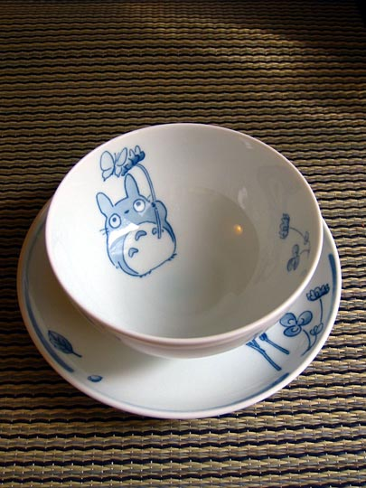
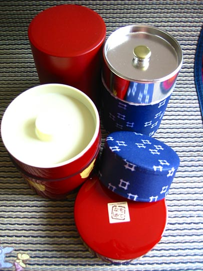
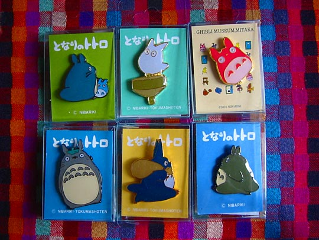
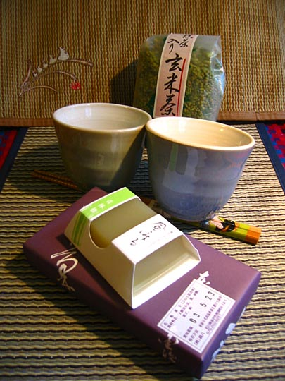
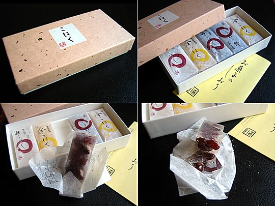

Photos from our second trip to Japan, 18 March–2 April 2005 are on Flickr
Japan, 18-28 April 2003
- Index and travelogue
- Imagery: Japanese posters, images, TV, and other designs [2.4Mb]
- Design that's different or clever [0.8Mb]
- Food [2.36Mb]
- Loot [2.45Mb]
Loot (i.e., stuff we brought back)
Disclaimer: This is a nearly exhaustive list, partially serving simply to remind ourselves what we bought, so there'll be a fair number of utterly trivial items here.
Objects
Tetsubin iron teapot, Iwachu brand, from the Oriental Bazaar, Harajuku

Noritake crockery with Totoro designs. Seems really timeless to me, like it's centuries-old folklore already.
The reed mats also have woven Totoro designs in the corner
Set of 4 Heidi porridge bowls
What you drink your tea from in most places

Three different tea caddies from bought at three different places, for three different kinds of tea we bought. All have a double-lid system, the inner one being air-tight. Both hotels we stayed in had ones like these, so that's how we decided we need them.
Totoro scarf
Cheap fake laquerware and cooking chopsticks
Toe-slippers, bought at a Senso-ji stall
Fans from the Oriental bazaar

Totoro pins

Homemade swallow pins from a DesignFesta stall
Heidi cards from Tokyo Hands
Paper balloon/lanterns from the Oriental Bazaar
Complementary matches from three different places we ate at. The little bamboo crab was bought from one of the restaurant supply shops in Kappabashi-dori
Edibles
Crabs in sesame seeds. I assume you eat them whole.
Dried tuna slices. (Already eaten; delicious)
Seafood rice crackers. Shrimps and things embedded in them like fossils. Here's a close-up:
Yum. See also the expensive version
Dried squid, cuttlefish, octopus, that sort of thing. I (and especially Kelly) developed a taste for this after an ex-colleague brought back some after a trip to Tokyo 2 years ago. Love the logo, too.
New leaf ocha (green tea). Read more here
A different variety of ocha. This one's slightly toasted, I think

Yet another variety of green tea (package in the background), which has little bits of puffed rice mixed in. In the foreground, a block of plum jelly you eat with a little plastic spade. The box underneath it is this intriguing sweet:

Red beans encased in translucent sugar, wrapped in gold-flecked rice paper
Green tea teabags
Various bits. Pocky are convenient little chocolate or mousse-coated wafer sticks. I'm not sure how widely they are available in the world, but my colleagues at work don't know it. The green tea flavouring is typical of Japan, though. Then little star sweets that look like dust bunny food (Spirited Away). Then green tea & plum sweet, then chocolate bars, then pencil erasers that look like dishes of food.
Package of 5 different varieties of miso soup. General-purpose chili-ish seasoning you find in all restaurants. And dried seaweed stamped into cute shapes.
Mango-flavoured boiled sweets, and sweet chestnuts. I liked the design on the back of the package (see red strip)
This is both an object and an edible. It contains persimmon jelly, which you scoop out with a spoon, but the plastic container is meant to be kept and re-used. The pamphlet enclosed has several suggestions: a soup-bowl, a teacup, a plant pot, ...
Rice crackers. The bead is a rice cracker with a peanut inside, and printed designs on the plastic wrapping make them look like dolls.
Books
So why did I buy a lot of comics I can't read? Well, over the years I've bought many in Japanese, French, Italian, and other languages I can't read, mainly for the art, and the comic medium makes it still possible to follow stories in a rudimentary fashion. But I am hoping to translate some of these one day, whether I can get people to do it for me, whether I may one day learn the language, or perhaps technology will come to the rescue. In the case of famous authors like Miyazaki, fan translations are a real possibility.
Books by Hayao Miyazaki
This is Mononoke Hime, or 'Monster Princess', an unsuccessful movie pitch that Miyazaki did in the early 80s, published in book form in 1997. It was a version of Beauty and the Beast, and in various respects it anticipates elements of Nausicaa, Totoro, Princess Mononoke, and Spirited Away. Background information and synopsis.
Hayao Miyazaki's Daydream note [sic]. Nausicaa.net entry: This is a series of manga (or rather, "Graphic Essays") which Miyazaki has been (very) sporadically writing in a Japanese scale model magazine, Model Graphix.
Exhibiting Animation. I was very pleased to get this as reading it provides a very similar experience to visiting the permanent exhibition rooms. It documents a special exhibition on Spirited Away at the museum, coinciding with its launch. Text in both Japanese and English.
Tiger Im Schlamm, or, Otto Carius: Doromamire no tora
(Tigers Covered With Mud). Nausicaa.net entry: An all-watercolor manga based on Tigers In The Mud, the memoirs of Otto Carius, a German tank commander. Fan translation
Nearly all manga shops I've found only sell books sealed, which means you can't look inside before you buy. While this makes obvious sense for the storekeeper, I've always tended to base my purchases on in-store reading. So there was an element of chance in all the following purchases.
Other manga bought at Mandarake

I don't know the name of the book, but it's by Fumiko Takano, whose Tsuru of the Tanabes greatly impressed me at the London Institute's manga exhibition in 2001. Unfortunately that story isn't in here, but it's a beautiful little book nonetheless.
One of two books I bought by Yamada Naito, another one of my favourites at above exhibition. Her drawing style reminded me of Edmond Baudoin (she seems to be very French-influenced, extending to the titles of her books.)
L'amant (1997) by Naito Yamada
Falling into the sky, by Murasaki Yamada, a highly influential female manga artist, known for her poetic style and, unusually in Japan, feminist outlook. I saw this comic by her at the London Institute exhibition. I also read about her in Frederik L. Schodt's Dreamland Japan.
This was a random find. Love My Life, by Ebine Yamaji. A subtle, sensitive story of a lesbian relationship. Beautiful art.
A back issue of the monthly manga Garo, the mainstay of Japanese "alternative" comics (Murasaki Yamada was a regular contributor at one time.) 1994 was its 30th anniversary, all under the auspices of founder Katsuichi Nagai, who died in 1996. The cover art is by Kiriko Na-Na-Nan.
A random purchase, F (for Fantastic) turned out to be really good, with a nice mix of styles and some extremely interesting-looking stories. Includes a story by Naito Yamada.
Update 17/5/03: also contains very good stories by Yoji Fukuyama, Akihito Yasuda, Naoki Yamamoto, Jiro Matsumoto (excellent), Hiroyuki Yasuda (excellent), Mamoru Hashimoto, Shintaro Kago (excellent), and more. All names I'll be looking for in future.
A 100-Yen store special. For fanatic fans of dachshunds (like Kelly).
Joe Hisaishi is one of Japan's foremost soundtrack composers. He has done the soundtracks for all Studio Ghibli's films, and many (maybe all) of Takeshi Kitano's. These are just from his Kitano soundtracks.

Hayao Miyazaki's Kiki's Delivery Service, Studio Ghibli. DVD.